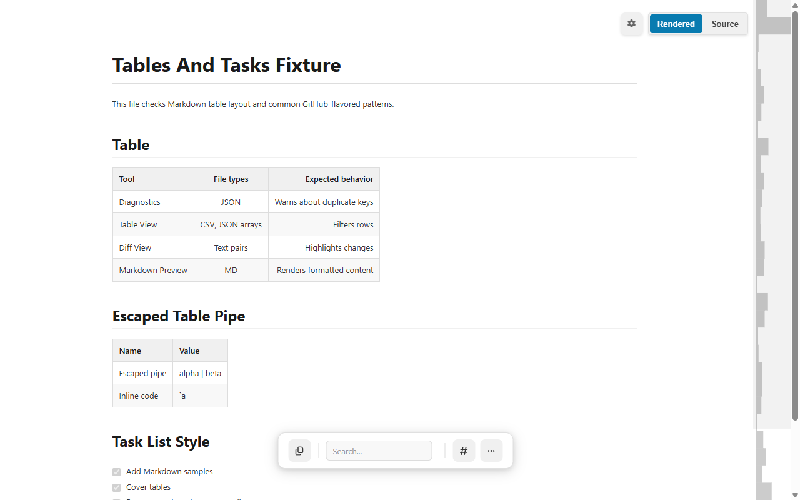
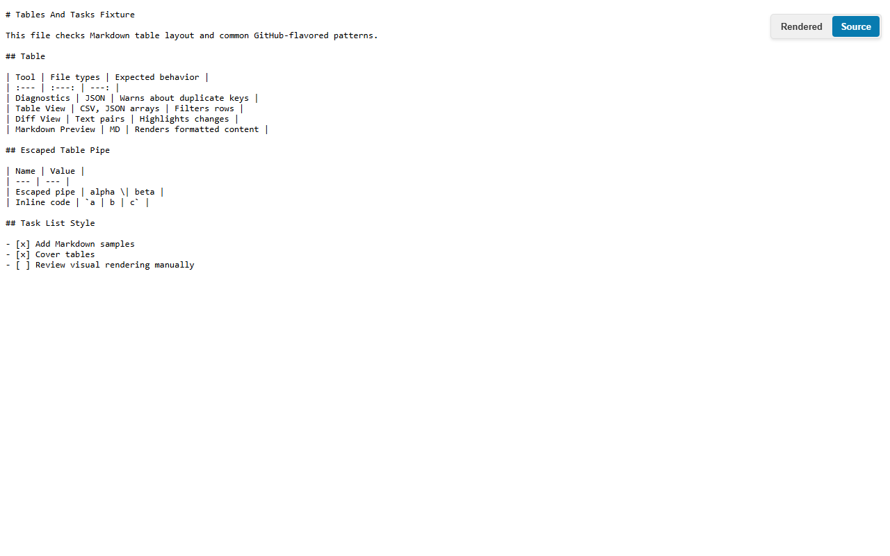

Remote raw Markdown
Open a URL ending in .md or a response served with a Markdown content type. CodePrettify recognizes the document and renders it.
Open a raw .md or .markdown file and CodePrettify turns it into a readable document while preserving a one-click Source view. Search, navigate headings, compare versions, inspect diagnostics, and export from the same tab.

Open a URL ending in .md or a response served with a Markdown content type. CodePrettify recognizes the document and renders it.
Drag a Markdown file onto the extension launcher or use the picker. This route does not require broad file:// permission.
If you prefer opening file:// URLs directly, enable “Allow access to file URLs” for CodePrettify in the browser’s extension settings.
This workflow helps you understand the document first, then verify the exact Markdown that produced it. Use any project README containing headings, links, a table, a task list, and a fenced code example.
For a downloaded README, drag it onto the extension launcher or choose it with the file picker. For a repository’s raw Markdown URL, open that URL directly. Enable broad file:// access only if direct local URLs are part of your normal workflow.
Scan the title, introduction, installation steps, examples, and troubleshooting sections. Open Document Navigator when available and jump between headings. This gives you the author’s intended hierarchy before you investigate how it was encoded.
Press Ctrl+F and search for a command, option, or error message. In Rendered view, search follows the readable document. Use this to answer “where is configuration explained?” before searching the source for backticks or link syntax.
Press Ctrl+B or use the Rendered/Source control. Inspect the exact heading markers, pipes, list indentation, brackets, escapes, and fence delimiters. Rendering does not rewrite the source, so the two views remain safe to compare.
Find a rendered cell containing a literal pipe. In Source view, confirm that the pipe is escaped as \| and that the header has a separator row. Then return to Rendered view and verify the text remains in one cell.
Check that - [x] is rendered as complete, - [ ] remains open, and the closing code fence uses at least as many backticks as the opening fence. A missing fence can make the rest of a document look like code.
Open Compare and paste the previous or proposed Markdown. Review the text diff for changed wording, links, code, and structure. Copy or export the source when another editor needs Markdown; use the rendered document only as the reading view.
Create or open a Markdown file with a heading, three changes, one fenced command, a compatibility table, and two tasks. Move through these checks in order.
The rendered view helps you understand the document. The Source view confirms the exact Markdown characters, table delimiters, task markers, links, and code fences that produced it.

Tables and task lists are useful test cases because one missing pipe, escape, or bracket changes the rendered meaning.
The source remains available when you need to diagnose why a row or checkbox did not render as expected.
| Tool | File types | Expected behavior |
| --- | --- | --- |
| Diagnostics | JSON | Warns about duplicate keys |
| Markdown Preview | MD | Renders formatted content |
| Name | Value |
| --- | --- |
| Escaped pipe | alpha \| beta |
- [x] Add Markdown samples
- [ ] Review visual renderingUse the two views together instead of guessing whether the source or the renderer caused a surprising layout.
✓ Header and separator rows align
✓ Escaped pipe stays inside one cell
✓ Checked task is visibly complete
✓ Unchecked task remains open
✓ Inline code does not become a column
✓ Source is unchanged by renderingWhen the rendered document looks wrong, start with the smallest source rule that could produce that symptom. The table below gives you a repeatable debugging order.
| Rendered symptom | Inspect in Source | What to learn |
|---|---|---|
| A table appears as ordinary paragraphs | Confirm the header, separator row, and balanced pipe structure. | A visual table requires a syntactically valid header boundary. |
| One cell became two columns | Look for an unescaped literal pipe and change it to \| where appropriate. | Delimiters have structural meaning unless escaped. |
| The rest of the document looks like code | Find the opening fence and verify a matching closing fence. | Block syntax changes how all following lines are parsed. |
| A checkbox remains plain text | Check the list marker, spaces, and exact [ ] or [x] syntax. | Task syntax extends a normal list item; it does not stand alone. |
| A remote image is shown as a link | Confirm that the source uses a remote image URL. | This is an intentional privacy boundary, not a rendering failure. |
| Raw HTML is displayed rather than executed | Inspect the HTML block in Source. | CodePrettify keeps embedded HTML inert so a document cannot become an active web page. |
Check the .md or .markdown URL, response content type, and Markdown setting. A repository’s normal HTML page is different from its raw-file URL.
Compare the generated heading anchor with duplicate or punctuated headings. Use Document Navigator to confirm the outline and the destination visible in the rendered document.
Inspect the scheme. Safe ordinary links remain clickable, while dangerous schemes are deliberately blocked. Rendering a document should not grant it script execution.
The browser extension is an inspection workspace. Copy or export the source into your editor, make the change there, then reopen or compare the revised document.
Learning outcome: you should be able to move from a visual Markdown problem to the exact delimiter, block boundary, escape, or safety rule responsible for it.
Remote Markdown image URLs are shown as links instead of loading automatically. That prevents an untrusted document from silently revealing that it was opened.
The browser extension is primarily a viewer and inspection workspace. Source remains read-only; copy or export content when you want to continue in an editor.
No. Raw HTML is not executed as active page content in the Markdown preview.
Automatically fetching it could disclose your IP address and document-open event to an external server. CodePrettify keeps that network action explicit.
Yes. Use Compare for a text diff between the current document and pasted content.
Open the file as a document, keep its exact source nearby, and use the same search and inspection tools as the rest of CodePrettify.